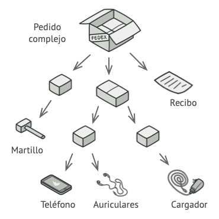

En esta Presentacion explicaremos que son los Patrones de disenos estructurales, cada uno de ellos, y les mostraremos la implementacion de los mismos con ejemplos tanto en como seria realizando una aplicacion.
Cristian Kerps

Desarrollador Backend Agora Pay
Matias Milich
Desarrollador Backend Agora Pay
Los patrones estructurales explican cómo ensamblar objetos y clases en estructuras más grandes, a la vez que se mantiene la flexibilidad y eficiencia de estas estructuras.
Existen siete patrones de diseño estructurales:
- Adapter
- Bridge
- Composite
- Decorator
- Facade
- Flyweight
- Proxy
Adapter
Adapter es un patrón de diseño estructural que permite la colaboración entre objetos con interfaces incompatibles.
El patrón adaptador se utiliza para transformar una interfaz en otra, de tal modo que una clase que no pueda utilizar la primera haga uso de ella a través de la segunda, es decir supongamos que estamos creando una aplicacion de monitoreo del mercado de valores. La aplicación descarga la información de bolsa desde varias fuentes en formato XML para presentarla al usuario con bonitos gráficos y diagramas.
En cierto momento, decides mejorar la aplicación integrando una inteligente biblioteca de análisis de una tercera persona. Pero hay una trampa: la biblioteca de análisis solo funciona con datos en formato JSON.
La solucion sera crear un adaptador que combierta el objeto XML en un objeto JSON. Se trata de un objeto especial que convierte la interfaz de un objeto, de forma que otro objeto pueda comprenderla.
Los adaptadores no solo convierten datos a varios formatos, sino que también ayudan a objetos con distintas interfaces a colaborar. Funciona así:
- El adaptador obtiene una interfaz compatible con uno de los objetos existentes.
- Utilizando esta interfaz, el objeto existente puede invocar con seguridad los métodos del adaptador.
- Al recibir una llamada, el adaptador pasa la solicitud al segundo objeto, pero en un formato y orden que ese segundo objeto espera.
En este caso vemos un diagrama de donde seria necesario usar un patron adapter en donde estaria fallando nuestra aplicacion
Aqui vemos el patron implementado y como nos ayuda a poder solucionar el problema antes mencionado
Cuando viajas de Europa a Estados Unidos por primera vez, puede ser que te lleves una sorpresa cuanto intentes cargar tu computadora portátil. Los tipos de enchufe son diferentes en cada país, por lo que un enchufe español no sirve en Estados Unidos. El problema puede solucionarse utilizando un adaptador que incluya el enchufe americano y el europeo.
Utiliza la clase adaptadora cuando quieras usar una clase existente, pero cuya interfaz no sea compatible con el resto del código. El patrón Adapter te permite crear una clase intermedia que sirva como traductora entre tu código y una clase heredada, una clase de un tercero o cualquier otra clase con una interfaz extraña. Utiliza el patrón cuando quieras reutilizar varias subclases existentes que carezcan de alguna funcionalidad común que no pueda añadirse a la superclase. Puedes extender cada subclase y colocar la funcionalidad que falta, dentro de las nuevas clases hijas. No obstante, deberás duplicar el código en todas estas nuevas clases, lo cual huele muy mal. Una solución mucho más elegante sería colocar la funcionalidad que falta dentro de una clase adaptadora. Después puedes envolver objetos a los que les falten funciones, dentro de la clase adaptadora, obteniendo esas funciones necesarias de un modo dinámico. Para que esto funcione, las clases en cuestión deben tener una interfaz común y el campo de la clase adaptadora debe seguir dicha interfaz. Este procedimiento es muy similar al del patrón Decorator.
Asegúrate de que tienes al menos dos clases con interfaces incompatibles: Una útil clase servicio que no puedes cambiar (a menudo de un tercero, heredada o con muchas dependencias existentes). Una o varias clases cliente que se beneficiarían de contar con una clase de servicio. Declara la interfaz con el cliente y describe el modo en que las clases cliente se comunican con la clase de servicio. Crea la clase adaptadora y haz que siga la interfaz con el cliente. Deja todos los métodos vacíos por ahora. Añade un campo a la clase adaptadora para almacenar una referencia al objeto de servicio. La práctica común es inicializar este campo a través del constructor, pero en ocasiones es adecuado pasarlo al adaptador cuando se invocan sus métodos. Uno por uno, implementa todos los métodos de la interfaz con el cliente en la clase adaptadora. La clase adaptadora deberá delegar la mayor parte del trabajo real al objeto de servicio, gestionando tan solo la interfaz o la conversión de formato de los datos. Las clases cliente deberán utilizar la clase adaptadora a través de la interfaz con el cliente. Esto te permitirá cambiar o extender las clases adaptadoras sin afectar al código cliente.
Bridge
Bridge es un patrón de diseño utilizado para desacoplar una abstracción de su implementación de manera que las dos puedan ser modificadas por separado sin necesidad de modificar la otra; dicho de otra manera, se desacopla una abstracción de su implementación para que puedan variar independientemente.
Bridge es un patrón de diseño estructural que te permite dividir una clase grande, o un grupo de clases estrechamente relacionadas, en dos jerarquías separadas (abstracción e implementación) que pueden desarrollarse independientemente la una de la otra.
Digamos que tienes una clase geométrica Forma con un par de subclases: Círculo y Cuadrado. Deseas extender esta jerarquía de clase para que incorpore colores, por lo que planeas crear las subclases de forma Rojo y Azul. Sin embargo, como ya tienes dos subclases, tienes que crear cuatro combinaciones de clase, como CírculoAzul y CuadradoRojo.
Añadir nuevos tipos de forma y color a la jerarquía hará que ésta crezca exponencialmente. Por ejemplo, para añadir una forma de triángulo deberás introducir dos subclases, una para cada color. Y, después, para añadir un nuevo color habrá que crear tres subclases, una para cada tipo de forma. Cuanto más avancemos, peor será.

Este problema se presenta porque intentamos extender las clases de forma en dos dimensiones independientes: por forma y por color. Es un problema muy habitual en la herencia de clases. El patrón Bridge intenta resolver este problema pasando de la herencia a la composición del objeto. Esto quiere decir que se extrae una de las dimensiones a una jerarquía de clases separada, de modo que las clases originales referencian un objeto de la nueva jerarquía, en lugar de tener todo su estado y sus funcionalidades dentro de una clase.

Con esta solución, podemos extraer el código relacionado con el color y colocarlo dentro de su propia clase, con dos subclases: Rojo y Azul. La clase Forma obtiene entonces un campo de referencia que apunta a uno de los objetos de color. Ahora la forma puede delegar cualquier trabajo relacionado con el color al objeto de color vinculado. Esa referencia actuará como un puente entre las clases Forma y Color. En adelante, añadir nuevos colores no exigirá cambiar la jerarquía de forma y viceversa.
El libro de la GoF introduce los términos Abstracción e Implementación como parte de la definición del patrón Bridge. En mi opinión, los términos suenan demasiado académicos y provocan que el patrón parezca más complicado de lo que es en realidad. Una vez leído el sencillo ejemplo con las formas y los colores, vamos a descifrar el significado que esconden las temibles palabras del libro de esta banda de cuatro. La Abstracción (también llamada interfaz) es una capa de control de alto nivel para una entidad. Esta capa no tiene que hacer ningún trabajo real por su cuenta, sino que debe delegar el trabajo a la capa de implementación (también llamada plataforma). Ten en cuenta que no estamos hablando de las interfaces o las clases abstractas de tu lenguaje de programación. Son cosas diferentes. Cuando hablamos de aplicación reales, la abstracción puede representarse por una interfaz gráfica de usuario (GUI), y la implementación puede ser el código del sistema operativo subyacente (API) a la que la capa GUI llama en respuesta a las interacciones del usuario. En términos generales, puedes extender esa aplicación en dos direcciones independientes: Tener varias GUI diferentes (por ejemplo, personalizadas para clientes regulares o administradores). Soportar varias API diferentes (por ejemplo, para poder lanzar la aplicación con Windows, Linux y macOS). En el peor de los casos, esta aplicación podría asemejarse a un plato gigante de espagueti, en el que cientos de condicionales conectan distintos tipos de GUI con varias API por todo el código. Es mucho más sencillo gestionar cambios en código modular Realizar incluso un cambio sencillo en una base de código monolítica es bastante difícil porque debes comprender todo el asunto muy bien. Es mucho más sencillo realizar cambios en módulos más pequeños y bien definidos. Puedes poner orden en este caos metiendo el código relacionado con combinaciones específicas interfaz-plataforma dentro de clases independientes. Sin embargo, pronto descubrirás que hay muchas de estas clases. La jerarquía de clase crecerá exponencialmente porque añadir una nueva GUI o soportar una API diferente exigirá que se creen más y más clases. Intentemos resolver este problema con el patrón Bridge, que nos sugiere que dividamos las clases en dos jerarquías: Abstracción: la capa GUI de la aplicación. Implementación: las API de los sistemas operativos. Arquitectura multiplataforma Una de las formas de estructurar una aplicación multiplataforma. El objeto de la abstracción controla la apariencia de la aplicación, delegando el trabajo real al objeto de la implementación vinculado. Las distintas implementaciones son intercambiables siempre y cuando sigan una interfaz común, permitiendo a la misma GUI funcionar con Windows y Linux. En consecuencia, puedes cambiar las clases de la GUI sin tocar las clases relacionadas con la API. Además, añadir soporte para otro sistema operativo sólo requiere crear una subclase en la jerarquía de implementación.
Utiliza el patrón Bridge cuando quieras dividir y organizar una clase monolítica que tenga muchas variantes de una sola funcionalidad (por ejemplo, si la clase puede trabajar con diversos servidores de bases de datos). Conforme más crece una clase, más difícil resulta entender cómo funciona y más tiempo se tarda en realizar un cambio. Cambiar una de las variaciones de funcionalidad puede exigir realizar muchos cambios a toda la clase, lo que a menudo provoca que se cometan errores o no se aborden algunos de los efectos colaterales críticos. El patrón Bridge te permite dividir la clase monolítica en varias jerarquías de clase. Después, puedes cambiar las clases de cada jerarquía independientemente de las clases de las otras. Esta solución simplifica el mantenimiento del código y minimiza el riesgo de descomponer el código existente. Utiliza el patrón cuando necesites extender una clase en varias dimensiones ortogonales (independientes). El patrón Bridge sugiere que extraigas una jerarquía de clase separada para cada una de las dimensiones. La clase original delega el trabajo relacionado a los objetos pertenecientes a dichas jerarquías, en lugar de hacerlo todo por su cuenta. Utiliza el patrón Bridge cuando necesites poder cambiar implementaciones durante el tiempo de ejecución. Aunque es opcional, el patrón Bridge te permite sustituir el objeto de implementación dentro de la abstracción. Es tan sencillo como asignar un nuevo valor a un campo. Por cierto, este último punto es la razón principal por la que tanta gente confunde el patrón Bridge con el patrón Strategy. Recuerda que un patrón es algo más que un cierto modo de estructurar tus clases. También puede comunicar intención y el tipo de problema que se está abordando.
Identifica las dimensiones ortogonales de tus clases. Estos conceptos independientes pueden ser: abstracción/plataforma, dominio/infraestructura, front end/back end, o interfaz/implementación. Comprueba qué operaciones necesita el cliente y defínelas en la clase base de abstracción. Determina las operaciones disponibles en todas las plataformas. Declara aquellas que necesite la abstracción en la interfaz general de implementación. Crea clases concretas de implementación para todas las plataformas de tu dominio, pero asegúrate de que todas sigan la interfaz de implementación. Dentro de la clase de abstracción añade un campo de referencia para el tipo de implementación. La abstracción delega la mayor parte del trabajo al objeto de la implementación referenciado en ese campo. Si tienes muchas variantes de lógica de alto nivel, crea abstracciones refinadas para cada variante extendiendo la clase base de abstracción. El código cliente debe pasar un objeto de implementación al constructor de la abstracción para asociar el uno con el otro. Después, el cliente puede ignorar la implementación y trabajar solo con el objeto de la abstracción.
Composite
Composite es un patrón de diseño estructural que te permite componer objetos en estructuras de árbol y trabajar con esas estructuras como si fueran objetos individuales.
El patrón de diseño Composite nos sirve para construir estructuras complejas partiendo de otras estructuras mucho más simples, dicho de otra manera, podemos crear estructuras compuestas las cuales están conformadas por otras estructuras más pequeñas. Para comprender mejor como funciona este patrón imaginemos una casa de ladrillos, las casas como tal no están hecha de una pieza, si observamos las paredes estas esta echas de pequeñas piezas llamadas ladrillos, entonces, el conjunto de estos ladrillos crea paredes, y un conjunto de paredes crean una casa. este ejemplo puede ser aplicado al patrón Composite, este ejemplo nos da una idea de cómo trabaja para poder utilizarlo con otros ejemplos.
El uso del patrón Composite sólo tiene sentido cuando el modelo central de tu aplicación puede representarse en forma de árbol. Por ejemplo, imagina que tienes dos tipos de objetos: Productos y Cajas. Una Caja puede contener varios Productos así como cierto número de Cajas más pequeñas. Estas Cajas pequeñas también pueden contener algunos Productos o incluso Cajas más pequeñas, y así sucesivamente. Digamos que decides crear un sistema de pedidos que utiliza estas clases. Los pedidos pueden contener productos sencillos sin envolver, así como cajas llenas de productos... y otras cajas. ¿Cómo determinarás el precio total de ese pedido?
Puedes intentar la solución directa: desenvolver todas las cajas, repasar todos los productos y calcular el total. Esto sería viable en el mundo real; pero en un programa no es tan fácil como ejecutar un bucle. Tienes que conocer de antemano las clases de Productos y Cajas a iterar, el nivel de anidación de las cajas y otros detalles desagradables. Todo esto provoca que la solución directa sea demasiado complicada, o incluso imposible.
Utiliza el patrón Composite cuando tengas que implementar una estructura de objetos con forma de árbol. El patrón Composite te proporciona dos tipos de elementos básicos que comparten una interfaz común: hojas simples y contenedores complejos. Un contenedor puede estar compuesto por hojas y por otros contenedores. Esto te permite construir una estructura de objetos recursivos anidados parecida a un árbol. Utiliza el patrón cuando quieras que el código cliente trate elementos simples y complejos de la misma forma. Todos los elementos definidos por el patrón Composite comparten una interfaz común. Utilizando esta interfaz, el cliente no tiene que preocuparse por la clase concreta de los objetos con los que funciona.
Asegúrate de que el modelo central de tu aplicación pueda representarse como una estructura de árbol. Intenta dividirlo en elementos simples y contenedores. Recuerda que los contenedores deben ser capaces de contener tanto elementos simples como otros contenedores. Declara la interfaz componente con una lista de métodos que tengan sentido para componentes simples y complejos. Crea una clase hoja para representar elementos simples. Un programa puede tener varias clases hoja diferentes. Crea una clase contenedora para representar elementos complejos. Incluye un campo matriz en esta clase para almacenar referencias a subelementos. La matriz debe poder almacenar hojas y contenedores, así que asegúrate de declararla con el tipo de la interfaz componente. Al implementar los métodos de la interfaz componente, recuerda que un contenedor debe delegar la mayor parte del trabajo a los subelementos. Por último, define los métodos para añadir y eliminar elementos hijos dentro del contenedor. Ten en cuenta que estas operaciones se pueden declarar en la interfaz componente. Esto violaría el Principio de segregación de la interfaz porque los métodos de la clase hoja estarían vacíos. No obstante, el cliente podrá tratar a todos los elementos de la misma manera, incluso al componer el árbol.
Decorator
Decorator es un patrón de diseño estructural que te permite añadir funcionalidades a objetos colocando estos objetos dentro de objetos encapsuladores especiales que contienen estas funcionalidades.
Según este patrón, cualquier objeto puede complementarse con un comportamiento deseado sin influir en las funcionalidades de otros objetos de la misma clase. Desde el punto de vista estructural, el patrón Decorador tiene mucho en común con el patrón Cadena de Responsabilidad (Chain of Responsibility), aunque, en contraste con este, con un procesador central, todas las clases reciben las peticiones. El componente de software que hay que ampliar se “decora” con una o más clases decoradoras, que lo envuelven completamente, siguiendo el patrón de diseño Decorador. Cada decorador es del mismo tipo que el componente al que envuelve y, por lo tanto, tiene la misma interfaz. De esta manera, las llamadas de método entrantes pueden delegarse fácilmente al componente adjunto mientras lleva a cabo una funcionalidad. Las llamadas también pueden procesarse dentro del decorador.
Vestir ropa es un ejemplo del uso de decoradores. Cuando tienes frío, te cubres con un suéter. Si sigues teniendo frío a pesar del suéter, puedes ponerte una chaqueta encima. Si está lloviendo, puedes ponerte un impermeable. Todas estas prendas “extienden” tu comportamiento básico pero no son parte de ti, y puedes quitarte fácilmente cualquier prenda cuando lo desees.

Utiliza el patrón Decorator cuando necesites asignar funcionalidades adicionales a objetos durante el tiempo de ejecución sin descomponer el código que utiliza esos objetos. El patrón Decorator te permite estructurar tu lógica de negocio en capas, crear un decorador para cada capa y componer objetos con varias combinaciones de esta lógica, durante el tiempo de ejecución. El código cliente puede tratar a todos estos objetos de la misma forma, ya que todos siguen una interfaz común. Utiliza el patrón cuando resulte extraño o no sea posible extender el comportamiento de un objeto utilizando la herencia. Muchos lenguajes de programación cuentan con la palabra clave final que puede utilizarse para evitar que una clase siga extendiéndose. Para una clase final, la única forma de reutilizar el comportamiento existente será envolver la clase con tu propio wrapper, utilizando el patrón Decorator.
Asegúrate de que tu dominio de negocio puede representarse como un componente primario con varias capas opcionales encima. Decide qué métodos son comunes al componente primario y las capas opcionales. Crea una interfaz de componente y declara esos métodos en ella. Crea una clase concreta de componente y define en ella el comportamiento base. Crea una clase base decoradora. Debe tener un campo para almacenar una referencia a un objeto envuelto. El campo debe declararse con el tipo de interfaz de componente para permitir la vinculación a componentes concretos, así como a decoradores. La clase decoradora base debe delegar todas las operaciones al objeto envuelto. Asegúrate de que todas las clases implementan la interfaz de componente. Crea decoradores concretos extendiéndolos a partir de la decoradora base. Un decorador concreto debe ejecutar su comportamiento antes o después de la llamada al método padre (que siempre delega al objeto envuelto). El código cliente debe ser responsable de crear decoradores y componerlos del modo que el cliente necesite.
Facade